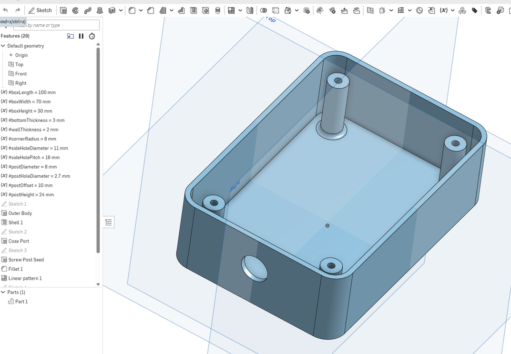
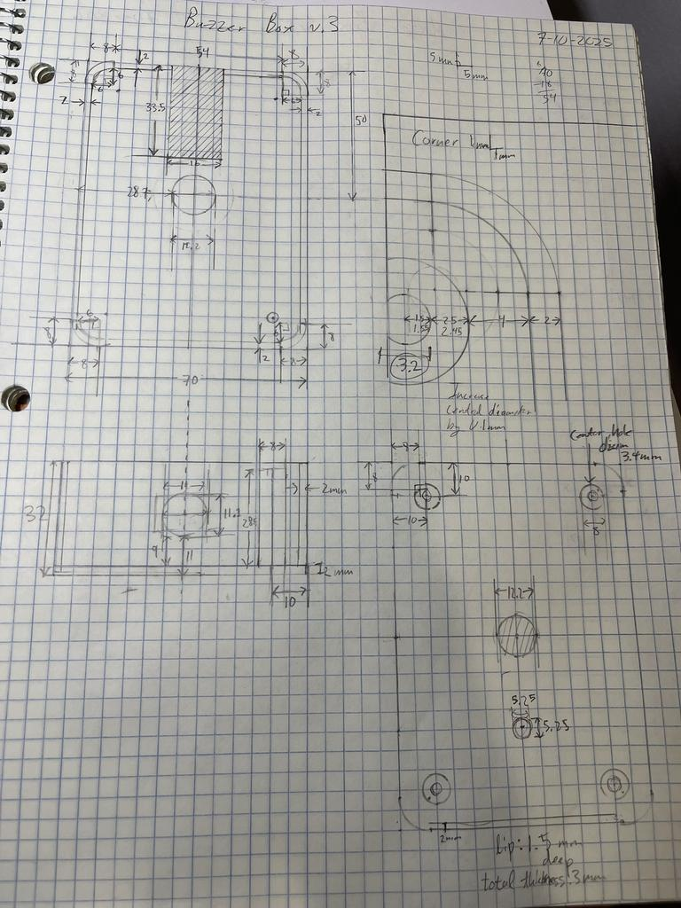

Motivation
I love Science bowl. In highschool, I was team captain of the Science bowl team. At Berkeley, I write physics problems for the Berkeley Science Bowl and consistently practice and play at the collegiate level with the Berkeley Quiz Bowl (who recently won first place in the national competition! Take *that* Stanford)
However, lockout buzzer box used in both of these competitions is extremely expensive. The open source projects that exist to address this issue tend to be deficient and are otherwise unsatisfactory. Trying to purchase these open source buzzer boxes from their creators often costs over $500, despite the cost of parts being far less.
There is one clear solution to this problem: JUST MAKE ONE MYSELF!
Initial CAD Design
At first I used Tinkercad to design the remote boxes because I assumed they would be extremely simple to design.
However, the lack of features in Tinkercad counterintuitively made it more difficult than OnShape, for a couple of reasons
- It was difficult to set precise dimensions and constraints.
- Making changes to existing features such as changing the dimensions often required redundant work.
- Many shapes don't have a notion of "center" so you had to line up shapes by eye, often using temporary shapes as makeshift tools. WHAT.
Anyways, after 3D printing 4 slightly dimensionally incorrect boxes, I gave up and went back to OnShape for the final design.

The project remained dimensionally consistent and percise due to making careful technical sketches beforehand on graph paper. I felt like an engineer from the 70s making them, but they unironically saved a ton of headache.
